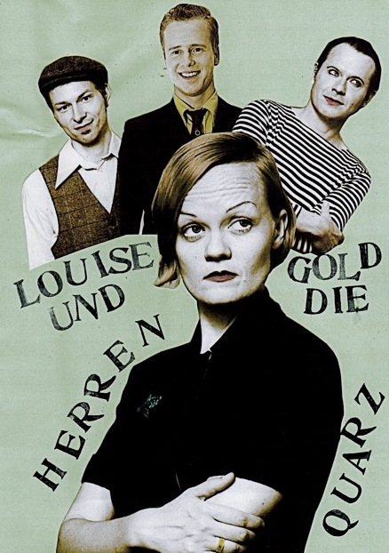

Hier ein heisser Swingtanz Tipp für den kommenden Sonntag Nachmittag:
Zur Eröffnung der Markthallen am Gleisdreieck (Luckenwalder Str. 4- 6) spielen Louise Gold und die Herren Quarz von 12:00 bis 16:00 Uhr feinstem Swing – ideal gemühtlich das Tanzbein im Trockenen zu swingen…
Hier schon mal reinhörn: http://www.myspace.com/goldquarz
http://www.facebook.com/event.php?eid=170757879609458&ref=ts
„Dieses Swing-Quartett räumt ein für alle Mal auf mit den Gedanken an weiße Fracks und älteren Herren mit Bauch und roter Nelke im Knopfloch.
Wenn Louise Gold singt und die Herren alles aus ihren Instrumenten herausholen, jagen sie eine Stampede über die Tanzfläche.
Trotz der kompakten Besetzung klingt das Quartett wie eine grosse Band – die Sängerin überrascht als Headmistress of Little Noises & Rythm,
der Posaunist verwandelt sein Blasinstrument gelegentlich in eine Percussion-Pumpe oder bemächtigt sich des Schifferklaviers, der stille Gitarrist verblüfft mit wilden Rockabilly-Soli, der Mann am Kontrabass wird mit einem Bogen zum Streicher und die Herren singen im Chor.
Das Repertoire besteht aus vielen Eigenkompositionen die ab und an die Spur der berüchtigten „Tin Pan Alley“ streifen,
verschollenen Swingperlen, die mit einem Schock reanimiert wurden, geswingten Popsongs und einer Sängerin, der manchmal der Elvis durchgeht.
Sie holt den King kurz aus dem Ruhestand und die letzte Energie aus den Tänzerbeinen.
Und am Ende werden alle zusammen glücklich und erschöpft in die Realität zurückschleudert.“